Overview
Once players reach level 250, they can purchase an estate at Estates Hill for 5M gold. This becomes a permanent asset that generates resources and provides character buffs.
Core Mechanics
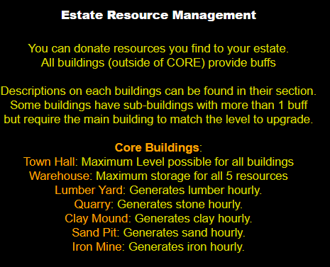
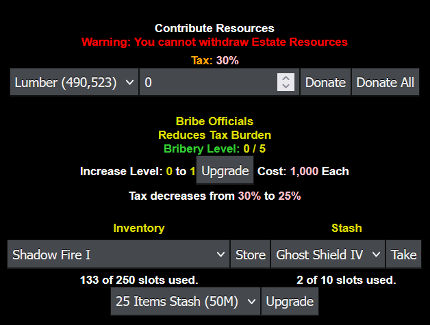
The five core resources are Lumber, Stone, Clay, Sand, and Iron. Each displays as "0 / 1000" where the left number shows current amount and the right shows maximum capacity. Resources generate hourly, even while offline.
Accessing Your Estate
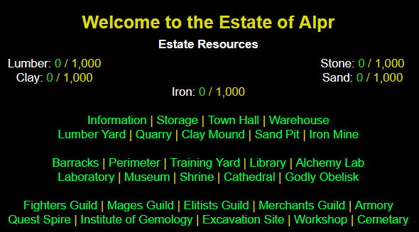
Two methods exist: traveling to Estates Hill directly, or using the Inventory Estate hotbar's "Home" teleport button. The hotbar also displays progression bars for each resource without visiting.
Town Hall
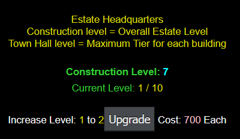
| Level | Tier Unlock for All Buildings | Resource Cost |
|---|---|---|
| 1 | 1 | Free |
| 2 | 2 | 700 Each |
| 3 | 3 | 1,400 Each |
| 4 | 4 | 2,100 Each |
| 5 | 5 | 3,500 Each |
| 6 | 6 | 5,250 Each |
| 7 | 7 | 7,000 Each |
| 8 | 8 | 21,000 Each |
| 9 | 9 | 45,500 Each |
| 10 | 10 | 63,000 Each |
Warehouse
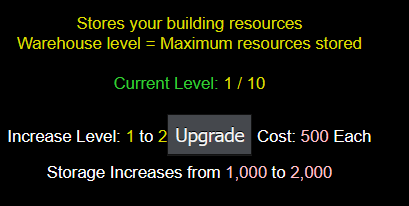
| Level | Storage Increase | New Capacity | Resource Cost |
|---|---|---|---|
| 1 | 0 | 1,000 | Free |
| 2 | 1,000 | 2,000 | 500 Each |
| 3 | 1,000 | 3,000 | 1,000 Each |
| 4 | 2,000 | 5,000 | 1,500 Each |
| 5 | 2,500 | 7,500 | 2,500 Each |
| 6 | 2,500 | 10,000 | 3,750 Each |
| 7 | 20,000 | 30,000 | 5,000 Each |
| 8 | 35,000 | 65,000 | 15,000 Each |
| 9 | 25,000 | 90,000 | 32,500 Each |
| 10 | 30,000 | 120,000 | 45,000 Each |
Lumber Yard
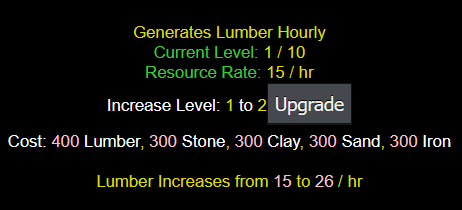
| Level | Increased Rate | New Rate | 24h Rate | Resource Cost |
|---|---|---|---|---|
| 1 | 0 | 15 | 360 | Free |
| 2 | 11 | 26 | 624 | 400 Lumber, 300 Stone/Clay/Sand/Iron |
| 3 | 22 | 48 | 1,152 | 800 Lumber, 600 Stone/Clay/Sand/Iron |
| 4 | 44 | 92 | 2,208 | 1,200 Lumber, 900 Stone/Clay/Sand/Iron |
| 5 | 68 | 160 | 3,840 | 2,000 Lumber, 1,500 Stone/Clay/Sand/Iron |
| 6 | 145 | 305 | 7,320 | 3,000 Lumber, 2,250 Stone/Clay/Sand/Iron |
| 7 | 280 | 585 | 14,040 | 4,000 Lumber, 3,000 Stone/Clay/Sand/Iron |
| 8 | 335 | 920 | 22,080 | 12,000 Lumber, 9,000 Stone/Clay/Sand/Iron |
| 9 | 630 | 1,550 | 37,200 | 26,000 Lumber, 19,500 Stone/Clay/Sand/Iron |
| 10 | 850 | 2,400 | 57,600 | 36,000 Lumber, 27,000 Stone/Clay/Sand/Iron |
Quarry
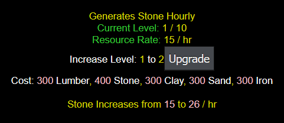
| Level | Increased Rate | New Rate | 24h Rate | Resource Cost |
|---|---|---|---|---|
| 1 | 0 | 15 | 360 | Free |
| 2 | 11 | 26 | 624 | 400 Stone, 300 Lumber/Clay/Sand/Iron |
| 3 | 22 | 48 | 1,152 | 800 Stone, 600 Lumber/Clay/Sand/Iron |
| 4 | 44 | 92 | 2,208 | 1,200 Stone, 900 Lumber/Clay/Sand/Iron |
| 5 | 68 | 160 | 3,840 | 2,000 Stone, 1,500 Lumber/Clay/Sand/Iron |
| 6 | 145 | 305 | 7,320 | 3,000 Stone, 2,250 Lumber/Clay/Sand/Iron |
| 7 | 280 | 585 | 14,040 | 4,000 Stone, 3,000 Lumber/Clay/Sand/Iron |
| 8 | 335 | 920 | 22,080 | 12,000 Stone, 9,000 Lumber/Clay/Sand/Iron |
| 9 | 630 | 1,550 | 37,200 | 26,000 Stone, 19,500 Lumber/Clay/Sand/Iron |
| 10 | 850 | 2,400 | 57,600 | 36,000 Stone, 27,000 Lumber/Clay/Sand/Iron |
Clay Mound
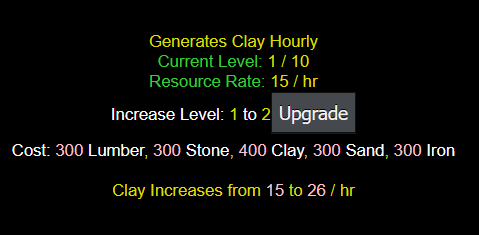
| Level | Increased Rate | New Rate | 24h Rate | Resource Cost |
|---|---|---|---|---|
| 1 | 0 | 15 | 360 | Free |
| 2 | 11 | 26 | 624 | 400 Clay, 300 Lumber/Stone/Sand/Iron |
| 3 | 22 | 48 | 1,152 | 800 Clay, 600 Lumber/Stone/Sand/Iron |
| 4 | 44 | 92 | 2,208 | 1,200 Clay, 900 Lumber/Stone/Sand/Iron |
| 5 | 68 | 160 | 3,840 | 2,000 Clay, 1,500 Lumber/Stone/Sand/Iron |
| 6 | 145 | 305 | 7,320 | 3,000 Clay, 2,250 Lumber/Stone/Sand/Iron |
| 7 | 280 | 585 | 14,040 | 4,000 Clay, 3,000 Lumber/Stone/Sand/Iron |
| 8 | 335 | 920 | 22,080 | 12,000 Clay, 9,000 Lumber/Stone/Sand/Iron |
| 9 | 630 | 1,550 | 37,200 | 26,000 Clay, 19,500 Lumber/Stone/Sand/Iron |
| 10 | 850 | 2,400 | 57,600 | 36,000 Clay, 27,000 Lumber/Stone/Sand/Iron |
Sand Pit
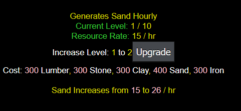
| Level | Increased Rate | New Rate | 24h Rate | Resource Cost |
|---|---|---|---|---|
| 1 | 0 | 15 | 360 | Free |
| 2 | 11 | 26 | 624 | 400 Sand, 300 Lumber/Stone/Clay/Iron |
| 3 | 22 | 48 | 1,152 | 800 Sand, 600 Lumber/Stone/Clay/Iron |
| 4 | 44 | 92 | 2,208 | 1,200 Sand, 900 Lumber/Stone/Clay/Iron |
| 5 | 68 | 160 | 3,840 | 2,000 Sand, 1,500 Lumber/Stone/Clay/Iron |
| 6 | 145 | 305 | 7,320 | 3,000 Sand, 2,250 Lumber/Stone/Clay/Iron |
| 7 | 280 | 585 | 14,040 | 4,000 Sand, 3,000 Lumber/Stone/Clay/Iron |
| 8 | 335 | 920 | 22,080 | 12,000 Sand, 9,000 Lumber/Stone/Clay/Iron |
| 9 | 630 | 1,550 | 37,200 | 26,000 Sand, 19,500 Lumber/Stone/Clay/Iron |
| 10 | 850 | 2,400 | 57,600 | 36,000 Sand, 27,000 Lumber/Stone/Clay/Iron |
Iron Mine
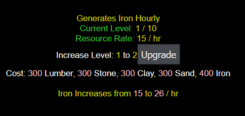
| Level | Increased Rate | New Rate | 24h Rate | Resource Cost |
|---|---|---|---|---|
| 1 | 0 | 15 | 360 | Free |
| 2 | 11 | 26 | 624 | 400 Iron, 300 Lumber/Stone/Clay/Sand |
| 3 | 22 | 48 | 1,152 | 800 Iron, 600 Lumber/Stone/Clay/Sand |
| 4 | 44 | 92 | 2,208 | 1,200 Iron, 900 Lumber/Stone/Clay/Sand |
| 5 | 68 | 160 | 3,840 | 2,000 Iron, 1,500 Lumber/Stone/Clay/Sand |
| 6 | 145 | 305 | 7,320 | 3,000 Iron, 2,250 Lumber/Stone/Clay/Sand |
| 7 | 280 | 585 | 14,040 | 4,000 Iron, 3,000 Lumber/Stone/Clay/Sand |
| 8 | 335 | 920 | 22,080 | 12,000 Iron, 9,000 Lumber/Stone/Clay/Sand |
| 9 | 630 | 1,550 | 37,200 | 26,000 Iron, 19,500 Lumber/Stone/Clay/Sand |
| 10 | 850 | 2,400 | 57,600 | 36,000 Iron, 27,000 Lumber/Stone/Clay/Sand |
Smithy
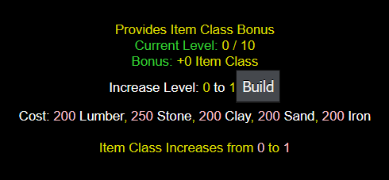
This structure increases Item Class by 1 per rank, applying to all character classes.
| Level | Item Class Increase | Total Item Class | Resource Cost |
|---|---|---|---|
| 1 | 1 | 1 | 250 Stone, 200 Lumber/Clay/Sand/Iron |
| 2 | 1 | 2 | 350 Stone, 250 Lumber/Clay/Sand/Iron |
| 3 | 1 | 3 | 700 Stone, 500 Lumber/Clay/Sand/Iron |
| 4 | 1 | 4 | 1,050 Stone, 750 Lumber/Clay/Sand/Iron |
| 5 | 1 | 5 | 1,750 Stone, 1,250 Lumber/Clay/Sand/Iron |
| 6 | 1 | 6 | 2,625 Stone, 1,875 Lumber/Clay/Sand/Iron |
| 7 | 1 | 7 | 3,500 Stone, 2,500 Lumber/Clay/Sand/Iron |
| 8 | 1 | 8 | 10,500 Stone, 7,500 Lumber/Clay/Sand/Iron |
| 9 | 1 | 9 | 22,750 Stone, 16,250 Lumber/Clay/Sand/Iron |
| 10 | 1 | 10 | 31,500 Stone, 22,500 Lumber/Clay/Sand/Iron |
Barracks
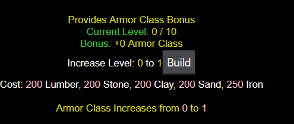
This structure increases Armor Class by 1 per rank, benefiting all character classes.
| Level | Armor Class Increase | Total Armor Class | Resource Cost |
|---|---|---|---|
| 1 | 1 | 1 | 250 Iron, 200 Lumber/Stone/Clay/Sand |
| 2 | 1 | 2 | 350 Iron, 250 Lumber/Stone/Clay/Sand |
| 3 | 1 | 3 | 700 Iron, 500 Lumber/Stone/Clay/Sand |
| 4 | 1 | 4 | 1,050 Iron, 750 Lumber/Stone/Clay/Sand |
| 5 | 1 | 5 | 1,750 Iron, 1,250 Lumber/Stone/Clay/Sand |
| 6 | 1 | 6 | 2,625 Iron, 1,875 Lumber/Stone/Clay/Sand |
| 7 | 1 | 7 | 3,500 Iron, 2,500 Lumber/Stone/Clay/Sand |
| 8 | 1 | 8 | 10,500 Iron, 7,500 Lumber/Stone/Clay/Sand |
| 9 | 1 | 9 | 22,750 Iron, 16,250 Lumber/Stone/Clay/Sand |
| 10 | 1 | 10 | 31,500 Iron, 22,500 Lumber/Stone/Clay/Sand |
Training Yard
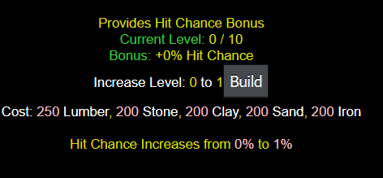
Increases Hit Chance by 1% per rank, up to 10%, for all character classes.
| Level | Hit Chance Increase | Total Hit Chance | Resource Cost |
|---|---|---|---|
| 1 | 1% | 1% | 250 Lumber, 200 Stone/Clay/Sand/Iron |
| 2 | 1% | 2% | 350 Lumber, 250 Stone/Clay/Sand/Iron |
| 3 | 1% | 3% | 700 Lumber, 500 Stone/Clay/Sand/Iron |
| 4 | 1% | 4% | 1,050 Lumber, 750 Stone/Clay/Sand/Iron |
| 5 | 1% | 5% | 1,750 Lumber, 1,250 Stone/Clay/Sand/Iron |
| 6 | 1% | 6% | 2,625 Lumber, 1,875 Stone/Clay/Sand/Iron |
| 7 | 1% | 7% | 3,500 Lumber, 2,500 Stone/Clay/Sand/Iron |
| 8 | 1% | 8% | 10,500 Lumber, 7,500 Stone/Clay/Sand/Iron |
| 9 | 1% | 9% | 22,750 Lumber, 16,250 Stone/Clay/Sand/Iron |
| 10 | 1% | 10% | 31,500 Lumber, 22,500 Stone/Clay/Sand/Iron |
Library
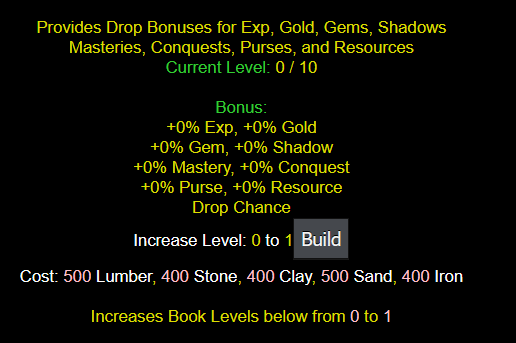
The library enables Bonus Time harnessing through book creation and upgrades. Books cannot exceed the library's maximum level, capped at 10.
| Level | Tier Unlocked | Resource Cost |
|---|---|---|
| 1 | 1 | 500 Lumber/Sand, 400 Stone/Clay/Iron |
| 2 | 2 | 600 Lumber/Sand, 500 Stone/Clay/Iron |
| 3 | 3 | 1,200 Lumber/Sand, 1,000 Stone/Clay/Iron |
| 4 | 4 | 1,800 Lumber/Sand, 1,500 Stone/Clay/Iron |
| 5 | 5 | 3,000 Lumber/Sand, 2,500 Stone/Clay/Iron |
| 6 | 6 | 4,500 Lumber/Sand, 3,750 Stone/Clay/Iron |
| 7 | 7 | 6,000 Lumber/Sand, 5,000 Stone/Clay/Iron |
| 8 | 8 | 18,000 Lumber/Sand, 15,000 Stone/Clay/Iron |
| 9 | 9 | 39,000 Lumber/Sand, 32,500 Stone/Clay/Iron |
| 10 | 10 | 54,000 Lumber/Sand, 45,000 Stone/Clay/Iron |
Book of Experience
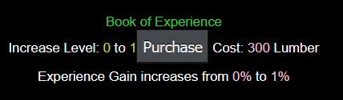
Increases experience earned from monster kills.
| Level | Exp Increase | Total Exp | Resource Cost |
|---|---|---|---|
| 1 | 1% | 1% | 300 Lumber |
| 2 | 1% | 2% | 300 Lumber |
| 3 | 1% | 3% | 600 Lumber |
| 4 | 2% | 5% | 900 Lumber |
| 5 | 2% | 7% | 1,500 Lumber |
| 6 | 2% | 9% | 2,250 Lumber |
| 7 | 2% | 11% | 3,000 Lumber |
| 8 | 3% | 14% | 9,000 Lumber |
| 9 | 3% | 17% | 19,500 Lumber |
| 10 | 3% | 20% | 27,000 Lumber |
Book of Riches
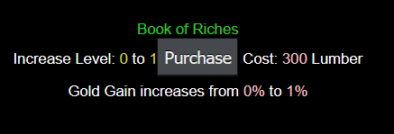
Increases gold earned from monster kills.
| Level | Gold Increase | Total Gold | Resource Cost |
|---|---|---|---|
| 1 | 1% | 1% | 300 Lumber |
| 2 | 1% | 2% | 300 Lumber |
| 3 | 1% | 3% | 600 Lumber |
| 4 | 2% | 5% | 900 Lumber |
| 5 | 2% | 7% | 1,500 Lumber |
| 6 | 2% | 9% | 2,250 Lumber |
| 7 | 2% | 11% | 3,000 Lumber |
| 8 | 3% | 14% | 9,000 Lumber |
| 9 | 3% | 17% | 19,500 Lumber |
| 10 | 3% | 20% | 27,000 Lumber |
Book of the Elements
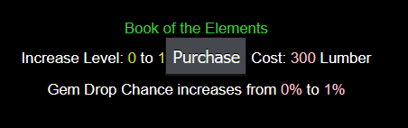
Increases gem drop chance from monster kills.
| Level | Gem Increase | Total Gem Chance | Resource Cost |
|---|---|---|---|
| 1 | 1% | 1% | 300 Lumber |
| 2 | 1% | 2% | 300 Lumber |
| 3 | 1% | 3% | 600 Lumber |
| 4 | 2% | 5% | 900 Lumber |
| 5 | 2% | 7% | 1,500 Lumber |
| 6 | 2% | 9% | 2,250 Lumber |
| 7 | 2% | 11% | 3,000 Lumber |
| 8 | 3% | 14% | 9,000 Lumber |
| 9 | 3% | 17% | 19,500 Lumber |
| 10 | 3% | 20% | 27,000 Lumber |
Book of Shadows
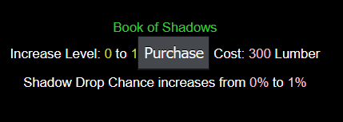
Increases shadow drop chance from monster kills.
| Level | Shadow Increase | Total Shadow Chance | Resource Cost |
|---|---|---|---|
| 1 | 1% | 1% | 300 Lumber |
| 2 | 1% | 2% | 300 Lumber |
| 3 | 1% | 3% | 600 Lumber |
| 4 | 2% | 5% | 900 Lumber |
| 5 | 2% | 7% | 1,500 Lumber |
| 6 | 2% | 9% | 2,250 Lumber |
| 7 | 2% | 11% | 3,000 Lumber |
| 8 | 3% | 14% | 9,000 Lumber |
| 9 | 3% | 17% | 19,500 Lumber |
| 10 | 3% | 20% | 27,000 Lumber |
Book of Training
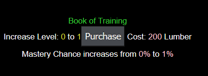
Increases mastery drop chance from combat.
| Level | Mastery Increase | Total Mastery Chance | Resource Cost |
|---|---|---|---|
| 1 | 1% | 1% | 200 Lumber |
| 2 | 1% | 2% | 200 Lumber |
| 3 | 1% | 3% | 400 Lumber |
| 4 | 2% | 5% | 600 Lumber |
| 5 | 2% | 7% | 1000 Lumber |
| 6 | 2% | 9% | 1,500 Lumber |
| 7 | 2% | 11% | 2,000 Lumber |
| 8 | 3% | 14% | 6,000 Lumber |
| 9 | 3% | 17% | 13,000 Lumber |
| 10 | 3% | 20% | 18,000 Lumber |
Book of Conquests
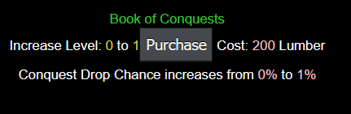
Increases conquest drop chance from killing monsters meeting conquest requirements.
| Level | Conquest Increase | Total Conquest Chance | Resource Cost |
|---|---|---|---|
| 1 | 1% | 1% | 200 Lumber |
| 2 | 1% | 2% | 200 Lumber |
| 3 | 1% | 3% | 400 Lumber |
| 4 | 2% | 5% | 600 Lumber |
| 5 | 2% | 7% | 1000 Lumber |
| 6 | 2% | 9% | 1,500 Lumber |
| 7 | 2% | 11% | 2,000 Lumber |
| 8 | 3% | 14% | 6,000 Lumber |
| 9 | 3% | 17% | 13,000 Lumber |
| 10 | 3% | 20% | 18,000 Lumber |
Book of Thieving
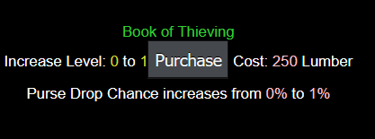
Increases purse drop chance from monster kills.
| Level | Purse Increase | Total Purse Increase | Resource Cost |
|---|---|---|---|
| 1 | 1% | 1% | 250 Lumber |
| 2 | 1% | 2% | 250 Lumber |
| 3 | 1% | 3% | 500 Lumber |
| 4 | 2% | 5% | 750 Lumber |
| 5 | 2% | 7% | 1,250 Lumber |
| 6 | 2% | 9% | 1,875 Lumber |
| 7 | 2% | 11% | 2,500 Lumber |
| 8 | 3% | 14% | 7,500 Lumber |
| 9 | 3% | 17% | 16,250 Lumber |
| 10 | 3% | 20% | 22,500 Lumber |
Book of Discovery
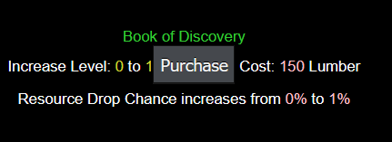
Increases resource drop chance from monster kills.
| Level | Resource Increase | Total Resource Increase | Resource Cost |
|---|---|---|---|
| 1 | 1% | 1% | 150 Lumber |
| 2 | 1% | 2% | 150 Lumber |
| 3 | 1% | 3% | 300 Lumber |
| 4 | 2% | 5% | 450 Lumber |
| 5 | 2% | 7% | 750 Lumber |
| 6 | 2% | 9% | 1,125 Lumber |
| 7 | 2% | 11% | 1,500 Lumber |
| 8 | 3% | 14% | 4,500 Lumber |
| 9 | 3% | 17% | 9,750 Lumber |
| 10 | 3% | 20% | 13,500 Lumber |
Alchemy Lab
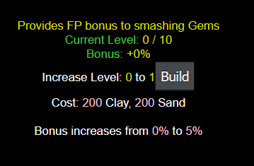
Allows gem smashing for additional fusion pieces through the Fusion Machine.
| Level | Smash Increase | Total Smash Bonus | Resource Cost |
|---|---|---|---|
| 1 | 5% | 5% | 200 Clay/Sand |
| 2 | 5% | 10% | 250 Clay/Sand |
| 3 | 10% | 20% | 500 Clay/Sand |
| 4 | 10% | 30% | 750 Clay/Sand |
| 5 | 10% | 40% | 1,250 Clay/Sand |
| 6 | 10% | 50% | 1,875 Clay/Sand |
| 7 | 15% | 65% | 2,500 Clay/Sand |
| 8 | 15% | 80% | 7,500 Clay/Sand |
| 9 | 20% | 100% | 16,250 Clay/Sand |
| 10 | 25% | 125% | 22,500 Clay/Sand |
Enchantment Lab
Enhances gem drops to higher quality than normal. Example: if a zone drops grades 2-4 and you receive a grade 2, you gain a 1-5% chance to automatically upgrade it to grade 3, but cannot exceed the maximum gem grade in that zone.
Requirement: Town Hall Lv6+
| Level | Gem % Increase | Total Gem % | Resource Cost |
|---|---|---|---|
| 1 | 1% | 1% | 1,875 Stone/Iron |
| 2 | 1% | 2% | 2,625 Stone/Iron |
| 3 | 1% | 3% | 3,500 Stone/Iron |
| 4 | 1% | 4% | 10,500 Stone/Iron |
| 5 | 1% | 5% | 22,750 Stone/Iron |
Polishing Station
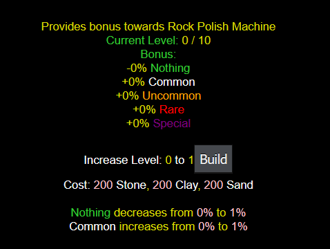
Connected to the Rock Polish Machine, this increases odds for transforming pebbles into gems.
| Level | Nothing Increase | Total Nothing Decrease | Common Increase | Total Common Increase | Uncommon Increase | Total Uncommon Increase | Rare Increase | Total Rare Increase | Special Increase | Total Special Increase | Resource Cost |
|---|---|---|---|---|---|---|---|---|---|---|---|
| 1 | -1% | -1% | 1% | 1% | N/A | N/A | N/A | N/A | N/A | N/A | 200 Stone/Clay/Sand |
| 2 | -1% | -2% | 1% | 2% | N/A | N/A | N/A | N/A | N/A | N/A | 300 Stone/Clay/Sand |
| 3 | -1% | -3% | 1% | 3% | N/A | N/A | N/A | N/A | N/A | N/A | 600 Stone/Clay/Sand |
| 4 | -1% | -4% | 1% | 4% | N/A | N/A | N/A | N/A | N/A | N/A | 900 Stone/Clay/Sand |
| 5 | -1% | -5% | 1% | 5% | N/A | N/A | N/A | N/A | N/A | N/A | 1,500 Stone/Clay/Sand |
| 6 | -2% | -7% | N/A | 5% | 1% | 1% | 1% | 1% | N/A | N/A | 2,250 Stone/Clay/Sand |
| 7 | -2% | -9% | N/A | 5% | 1% | 2% | 1% | 2% | N/A | N/A | 3,000 Stone/Clay/Sand |
| 8 | -2% | -11% | N/A | 5% | 1% | 3% | 1% | 3% | N/A | N/A | 9,000 Stone/Clay/Sand |
| 9 | -2% | -13% | N/A | 5% | 1% | 4% | N/A | 3% | 1% | 1% | 19,500 Stone/Clay/Sand |
| 10 | -2% | -15% | N/A | 5% | 1% | 5% | N/A | 3% | 1% | 2% | 27,000 Stone/Clay/Sand |
Shadow Forge
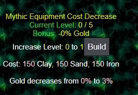
Reduces gold costs for upgrading shadow gear to mythic rarity.
| Level | Cost Decrease | Total Cost Decrease | Resource Cost |
|---|---|---|---|
| 1 | 3% | 3% | 150 Clay/Sand/Iron |
| 2 | 3% | 6% | 250 Clay/Sand/Iron |
| 3 | 3% | 9% | 500 Clay/Sand/Iron |
| 4 | 3% | 12% | 750 Clay/Sand/Iron |
| 5 | 3% | 15% | 1,250 Clay/Sand/Iron |
Ancestral Altar
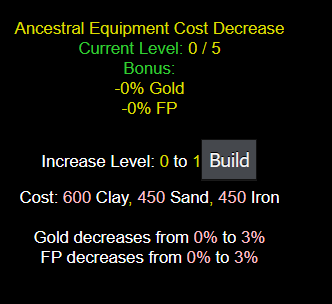
Reduces gold and fusion pieces required for upgrading mythic gear to ancestral rarity.
Requirement: Town Hall Lv3+
| Level | Cost Decrease | FP Decrease | Total Cost Decrease | Total FP Decrease | Resource Cost |
|---|---|---|---|---|---|
| 1 | 3% | 3% | 3% | 3% | 600 Clay, 450 Sand/Iron |
| 2 | 3% | 3% | 6% | 6% | 900 Clay, 750 Sand/Iron |
| 3 | 3% | 3% | 9% | 9% | 1,500 Clay, 1,250 Sand/Iron |
| 4 | 3% | 3% | 12% | 12% | 2,250 Clay, 1,875 Sand/Iron |
| 5 | 3% | 3% | 15% | 15% | 3,000 Clay, 2,500 Sand/Iron |
Godly Obelisk
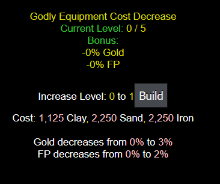
Reduces gold and fusion pieces required for upgrading ancestral gear to godly rarity.
Requirement: Town Hall Lv5+
| Level | Cost Decrease | FP Decrease | Total Cost Decrease | Total FP Decrease | Resource Cost |
|---|---|---|---|---|---|
| 1 | 3% | 2% | 3% | 2% | 1,125 Clay, 2,250 Sand/Iron |
| 2 | 3% | 2% | 6% | 4% | 1,875 Clay, 3,000 Sand/Iron |
| 3 | 3% | 2% | 9% | 6% | 2,500 Clay, 4,000 Sand/Iron |
| 4 | 3% | 2% | 12% | 8% | 7,500 Clay, 12,000 Sand/Iron |
| 5 | 3% | 2% | 15% | 10% | 16,250 Clay, 26,000 Sand/Iron |
Fighter's Guild
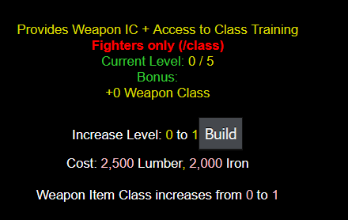
Home to melee fighters, providing Weapon Class increases to Sword, Axe, Staff, Mace, and Shield classes. Also unlocks specialized sub-buildings for hidden potential.
Requirement: Town Hall Lv5+
| Level | WC Increase | Total WC Increase | Resource Cost |
|---|---|---|---|
| 1 | 1 | 1 | 2,500 Lumber, 2,000 Iron |
| 2 | 1 | 2 | 4,500 Lumber, 3,500 Iron |
| 3 | 1 | 3 | 13,500 Lumber, 10,500 Iron |
| 4 | 1 | 4 | 29,250 Lumber, 22,750 Iron |
| 5 | 1 | 5 | 40,500 Lumber, 31,500 Iron |
Path of the Sword
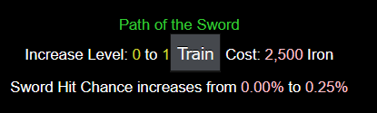
Focuses on Sword class, increasing Hit Chance.
Requirement: Fighters Guild Lv1+
| Level | HC Increase | Total HC Increase | Resource Cost |
|---|---|---|---|
| 1 | 0.25% | 0.25% | 2,500 Iron |
| 2 | 0.25% | 0.50% | 2,500 Iron |
| 3 | 0.25% | 0.75% | 7,500 Iron |
| 4 | 0.25% | 1.00% | 16,250 Iron |
| 5 | 0.25% | 1.25% | 22,500 Iron |
Path of the Axe
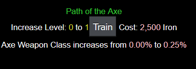
Focuses on Axe class, increasing Weapon Class.
Requirement: Fighters Guild Lv1+
| Level | WC Increase | Total WC Increase | Resource Cost |
|---|---|---|---|
| 1 | 0.25% | 0.25% | 2,500 Iron |
| 2 | 0.25% | 0.50% | 2,500 Iron |
| 3 | 0.25% | 0.75% | 7,500 Iron |
| 4 | 0.25% | 1.00% | 16,250 Iron |
| 5 | 0.25% | 1.25% | 22,500 Iron |
Path of the Staff
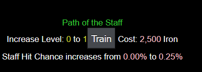
Focuses on Staff class, increasing Hit Chance.
Requirement: Fighters Guild Lv1+
| Level | HC Increase | Total HC Increase | Resource Cost |
|---|---|---|---|
| 1 | 0.25% | 0.25% | 2,500 Iron |
| 2 | 0.25% | 0.50% | 2,500 Iron |
| 3 | 0.25% | 0.75% | 7,500 Iron |
| 4 | 0.25% | 1.00% | 16,250 Iron |
| 5 | 0.25% | 1.25% | 22,500 Iron |
Path of the Mace
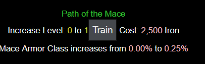
Focuses on Mace class, increasing Armor Class.
Requirement: Fighters Guild Lv1+
| Level | AC Increase | Total AC Increase | Resource Cost |
|---|---|---|---|
| 1 | 0.25% | 0.25% | 2,500 Iron |
| 2 | 0.25% | 0.50% | 2,500 Iron |
| 3 | 0.25% | 0.75% | 7,500 Iron |
| 4 | 0.25% | 1.00% | 16,250 Iron |
| 5 | 0.25% | 1.25% | 22,500 Iron |
Path of the Shield
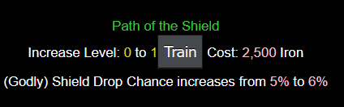
Focuses on Shield class (Godly only), increasing Drop Chance. Default bonus is 5%.
Requirement: Fighters Guild Lv1+
| Level | DC Increase | Total DC Increase | Resource Cost |
|---|---|---|---|
| 1 | 1% | 6% | 2,500 Iron |
| 2 | 1% | 7% | 2,500 Iron |
| 3 | 1% | 8% | 7,500 Iron |
| 4 | 1% | 9% | 16,250 Iron |
| 5 | 1% | 10% | 22,500 Iron |
Mages Guild
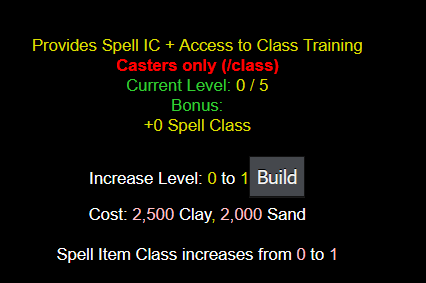
Home to casters (except Vampires), providing Spell Class increases to Fire, Cold, Air, Earth, and Arcane classes. Also unlocks specialized sub-buildings for hidden potential.
Requirement: Town Hall Lv5+
| Level | SC Increase | Total SC Increase | Resource Cost |
|---|---|---|---|
| 1 | 1 | 1 | 2,500 Clay, 2,000 Sand |
| 2 | 1 | 2 | 4,500 Clay, 3,500 Sand |
| 3 | 1 | 3 | 13,500 Clay, 10,500 Sand |
| 4 | 1 | 4 | 29,250 Clay, 22,750 Sand |
| 5 | 1 | 5 | 40,500 Clay, 31,500 Sand |
Spellbook of Flames
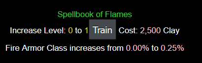
Focuses on Fire class, increasing Armor Class.
Requirement: Mages Guild Lv1+
| Level | AC Increase | Total AC Increase | Resource Cost |
|---|---|---|---|
| 1 | 0.25% | 0.25% | 2,500 Clay |
| 2 | 0.25% | 0.50% | 2,500 Clay |
| 3 | 0.25% | 0.75% | 7,500 Clay |
| 4 | 0.25% | 1.00% | 16,250 Clay |
| 5 | 0.25% | 1.25% | 22,500 Clay |
Spellbook of Frost
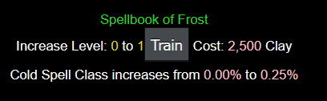
Focuses on Cold class, increasing Spell Class.
Requirement: Mages Guild Lv1+
| Level | SC Increase | Total SC Increase | Resource Cost |
|---|---|---|---|
| 1 | 0.25% | 0.25% | 2,500 Clay |
| 2 | 0.25% | 0.50% | 2,500 Clay |
| 3 | 0.25% | 0.75% | 7,500 Clay |
| 4 | 0.25% | 1.00% | 16,250 Clay |
| 5 | 0.25% | 1.25% | 22,500 Clay |
Spellbook of Thunder
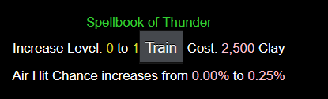
Focuses on Air class, increasing Hit Chance.
Requirement: Mages Guild Lv1+
| Level | HC Increase | Total HC Increase | Resource Cost |
|---|---|---|---|
| 1 | 0.25% | 0.25% | 2,500 Clay |
| 2 | 0.25% | 0.50% | 2,500 Clay |
| 3 | 0.25% | 0.75% | 7,500 Clay |
| 4 | 0.25% | 1.00% | 16,250 Clay |
| 5 | 0.25% | 1.25% | 22,500 Clay |
Spellbook of Earth
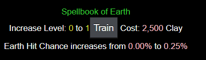
Focuses on Earth class, increasing Hit Chance.
Requirement: Mages Guild Lv1+
| Level | HC Increase | Total HC Increase | Resource Cost |
|---|---|---|---|
| 1 | 0.25% | 0.25% | 2,500 Clay |
| 2 | 0.25% | 0.50% | 2,500 Clay |
| 3 | 0.25% | 0.75% | 7,500 Clay |
| 4 | 0.25% | 1.00% | 16,250 Clay |
| 5 | 0.25% | 1.25% | 22,500 Clay |
Spellbook of Healing
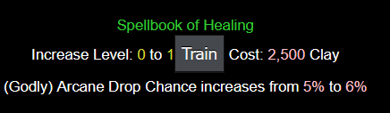
Focuses on Arcane class (Godly only), increasing Drop Chance. Default bonus is 5%.
Requirement: Mages Guild Lv1+
| Level | AC Increase | Total AC Increase | Resource Cost |
|---|---|---|---|
| 1 | 1% | 6% | 2,500 Clay |
| 2 | 1% | 7% | 2,500 Clay |
| 3 | 1% | 8% | 7,500 Clay |
| 4 | 1% | 9% | 16,250 Clay |
| 5 | 1% | 10% | 22,500 Clay |
Spellbook of the Psyche
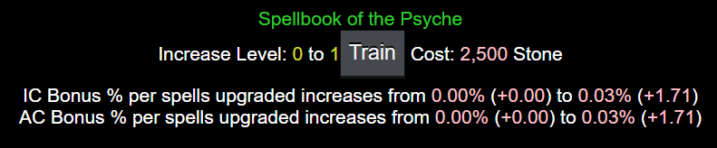
Elitists Guild
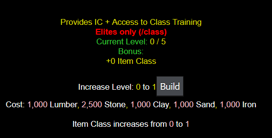
Home to the three elite classes, providing Item Class increases to Sharpshooter, Vampire, and Werewolf classes. Also unlocks specialized sub-buildings for hidden potential.
Requirement: Town Hall Lv5+
| Level | IC Increase | Total IC Increase | Resource Cost |
|---|---|---|---|
| 1 | 1 | 1 | 2,500 Stone, 1,000 Lumber/Clay/Sand/Iron |
| 2 | 1 | 2 | 4,500 Stone, 2,500 Lumber/Clay/Sand/Iron |
| 3 | 1 | 3 | 13,500 Stone, 7,500 Lumber/Clay/Sand/Iron |
| 4 | 1 | 4 | 29,250 Stone, 16,250 Lumber/Clay/Sand/Iron |
| 5 | 1 | 5 | 40,500 Stone, 22,500 Lumber/Clay/Sand/Iron |
Path of the Ranger
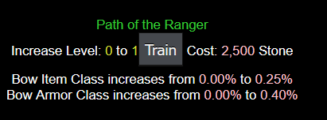
Focuses on Sharpshooter class, increasing Item Class and Armor Class.
Requirement: Elitists Guild Lv1+
| Level | IC Increase | AC Increase | Total IC Increase | Total AC Increase | Resource Cost |
|---|---|---|---|---|---|
| 1 | 0.25% | 0.40% | 0.25% | 0.40% | 2,500 Stone |
| 2 | 0.25% | 0.40% | 0.50% | 0.80% | 2,500 Stone |
| 3 | 0.25% | 0.40% | 0.75% | 1.20% | 7,500 Stone |
| 4 | 0.25% | 0.40% | 1.00% | 1.60% | 16,250 Stone |
| 5 | 0.25% | 0.40% | 1.25% | 2.00% | 22,500 Stone |
Spellbook of Blood
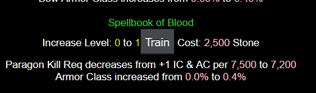
Focuses on Vampire class, decreasing Blood Paragon kill requirements and increasing Armor Class. Default kill requirement is 7,500 per +1 Item Class and Armor Class.
Requirement: Elitists Guild Lv1+
| Level | Paragon Kill Req. Decrease | AC Increase | Paragon Kill Req. | Total AC Increase | Resource Cost |
|---|---|---|---|---|---|
| 1 | 300 | 0.4% | 7,200 | 0.4% | 2,500 Stone |
| 2 | 300 | 0.4% | 6,900 | 0.8% | 2,500 Stone |
| 3 | 300 | 0.4% | 6,600 | 1.2% | 7,500 Stone |
| 4 | 300 | 0.4% | 6,300 | 1.6% | 16,250 Stone |
| 5 | 300 | 0.4% | 6,000 | 2.0% | 22,500 Stone |
Path of the Beast
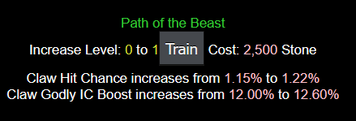
Focuses on Werewolf class, increasing Hit Chance and godly Item Class bonus. Default hit chance is 1.15% and godly Item Class bonus is 12%.
Requirement: Elitists Guild Lv1+
| Level | HC Increase | Godly Claw IC Boost Increase | Total HC Increase | Total Godly Claw IC Boost Increase | Resource Cost |
|---|---|---|---|---|---|
| 1 | 0.7% | 0.60% | 1.22% | 12.60% | 2,500 Stone |
| 2 | 0.7% | 0.60% | 1.29% | 13.20% | 2,500 Stone |
| 3 | 0.7% | 0.60% | 1.36% | 13.80% | 7,500 Stone |
| 4 | 0.7% | 0.60% | 1.43% | 14.40% | 16,250 Stone |
| 5 | 0.7% | 0.60% | 1.50% | 15.00% | 22,500 Stone |
Spellbook of Death
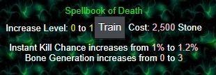
Focuses on Necromancer class, increasing instant kill chance and bone generation. Default instant kill is 1% and bone generation is +1/kill.
Requirement: Elitists Guild Lv1+
| Level | Instant Kill Increase | Bone Generation Increase | Total Instant Kill Increase | Total Bone Generation Increase | Resource Cost |
|---|---|---|---|---|---|
| 1 | 0.2% | 3 | 1.2% | 4 | 2,500 Stone |
| 2 | 0.2% | 3 | 1.4% | 7 | 2,500 Stone |
| 3 | 0.2% | 3 | 1.6% | 10 | 7,500 Stone |
| 4 | 0.2% | 3 | 1.8% | 13 | 16,250 Stone |
| 5 | 0.2% | 3 | 2% | 16 | 22,500 Stone |
Path of Souls
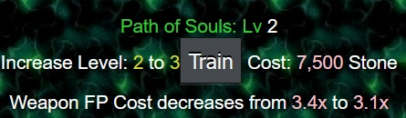
Focuses on Reaper class, decreasing weapon Fusion Piece cost. Default weapon FP cost is 2.5x normal.
Requirement: Elitists Guild Lv1+
| Level | Weapon FP Cost Decrease | Total Weapon FP Cost Decrease | Resource Cost |
|---|---|---|---|
| 1 | 0.2x | 2.3x | 2,500 Stone |
| 2 | 0.2x | 2.1x | 2,500 Stone |
| 3 | 0.2x | 1.9x | 7,500 Stone |
| 4 | 0.60% | 1.7x | 16,250 Stone |
| 5 | 0.60% | 1.5x | 22,500 Stone |
Merchants Guild
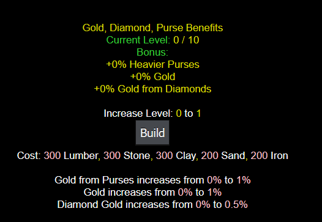
Increases gold from purses, gold from monster kills, and diamond effects.
| Level | Purse Increase | Gold Increase | Dia Increase | Total Purse Increase | Total Gold Increase | Total Dia Increase | Resource Cost |
|---|---|---|---|---|---|---|---|
| 1 | 1% | 1% | 0.5% | 1% | 1% | 0.5% | 300 Lumber/Stone/Clay, 200 Sand/Iron |
| 2 | 1% | 1% | 0.5% | 2% | 2% | 1.0% | 500 Lumber/Stone/Clay, 400 Sand/Iron |
| 3 | 1% | 1% | 0.5% | 3% | 3% | 1.5% | 1,000 Lumber/Stone/Clay, 800 Sand/Iron |
| 4 | 1% | 1% | 0.5% | 4% | 4% | 2.0% | 1,500 Lumber/Stone/Clay, 1,200 Sand/Iron |
| 5 | 1% | 1% | 0.5% | 5% | 5% | 2.5% | 2,500 Lumber/Stone/Clay, 2,000 Sand/Iron |
| 6 | 1% | 1% | 0.5% | 6% | 6% | 3.0% | 3,750 Lumber/Stone/Clay, 3,000 Sand/Iron |
| 7 | 1% | 1% | 0.5% | 7% | 7% | 3.5% | 5,000 Lumber/Stone/Clay, 4,000 Sand/Iron |
| 8 | 1% | 1% | 0.5% | 8% | 8% | 4.0% | 15,000 Lumber/Stone/Clay, 12,000 Sand/Iron |
| 9 | 1% | 1% | 0.5% | 9% | 9% | 4.5% | 32,500 Lumber/Stone/Clay, 26,000 Sand/Iron |
| 10 | 1% | 1% | 0.5% | 10% | 10% | 5.0% | 45,000 Lumber/Stone/Clay, 36,000 Sand/Iron |
Armory
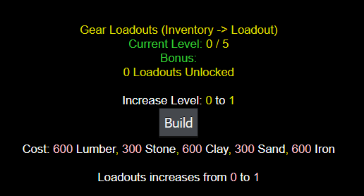
Provides access to Loadouts, which are gear presets.
| Level | Loadouts Available | Resource Cost |
|---|---|---|
| 1 | 1 | 600 Lumber/Clay/Iron, 300 Stone/Sand |
| 2 | 2 | 1,050 Lumber/Clay/Iron, 750 Stone/Sand |
| 3 | 3 | 1,750 Lumber/Clay/Iron, 1,250 Stone/Sand |
| 4 | 4 | 2,625 Lumber/Clay/Iron, 1,875 Stone/Sand |
| 5 | 5 | 3,500 Lumber/Clay/Iron, 2,500 Stone/Sand |
Quest Spire
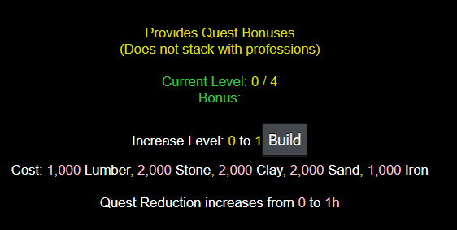
Provides passive quest bonuses matching professions, eliminating the need to constantly switch when pursuing quests to receive bonuses. Note bonuses do not stack with profession perks.
Requirement: Town Hall Lv4+
| Level | Quest Timer Reduction | Malachite Increase | Total QTR | Additional | Resource Cost |
|---|---|---|---|---|---|
| 1 | -1h | N/A | -1h | N/A | 1,000 Lumber/Iron, 2,000 Stone/Clay/Sand |
| 2 | -1h | N/A | -2h | N/A | 2,250 Lumber/Iron, 3,750 Stone/Clay/Sand |
| 3 | 0h | +1h | -2h | N/A | 9,000 Lumber/Iron, 15,000 Stone/Clay/Sand |
| 4 | -1h | N/A | -3h | Unlocks the Bestiary Building | 27,000 Lumber/Iron, 45,000 Stone/Clay/Sand |
Bestiary
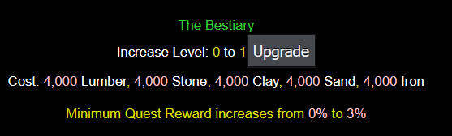
Only unlocked when Quest Spire reaches maximum tier 4. Improves quests by increasing minimum reward.
Requirement: Quest Spire Lv4
| Level | Min. Quest Reward Increase | Total Min. Quest Reward | Resource Cost |
|---|---|---|---|
| 1 | 3% | 3% | 4,000 Each |
| 2 | 3% | 6% | 6,000 Each |
| 3 | 3% | 9% | 18,000 Each |
| 4 | 3% | 12% | 39,000 Each |
| 5 | 3% | 15% | 54,000 Each |
Institute of Gemology
Increases Class Gem drop rate. Default chance is 2% to drop a gem specific to your class instead of random gem (dependent on zone parameters).
Requirement: Town Hall Lv3+
| Level | Class Gem Increase | Total Class Gem Increase | Resource Cost |
|---|---|---|---|
| 1 | 1% | 3% | 750 Stone, 1,350 Clay |
| 2 | 1% | 4% | 1,050 Stone, 1,800 Clay |
| 3 | 1% | 5% | 1,750 Stone, 3,000 Clay |
| 4 | 1% | 6% | 2,625 Stone, 4,500 Clay |
| 5 | 1% | 7% | 3,500 Stone, 6,000 Clay |
| 6 | 1% | 8% | 10,500 Stone, 18,000 Clay |
Excavation Site
Increases yield from Resource Locations in Scorched Dunes. Default yield is 0 (minimum) to 25 (maximum) resources, taking 5 seconds per action.
| Level | Min. Gain Increase | Max Gain Increase | Total Min. Gain | Total Max Gain | Resource Cost |
|---|---|---|---|---|---|
| 1 | 3 | 8 | 3 | 33 | 200 Each |
| 2 | 2 | 7 | 5 | 40 | 350 Each |
| 3 | 3 | 8 | 8 | 48 | 700 Each |
| 4 | 2 | 7 | 10 | 55 | 1,050 Each |
| 5 | 3 | 8 | 13 | 63 | 1,700 Each |
| 6 | 2 | 7 | 15 | 70 | 2,625 Each |
| 7 | 3 | 8 | 18 | 78 | 3,500 Each |
| 8 | 2 | 7 | 20 | 85 | 10,500 Each |
| 9 | 3 | 8 | 23 | 93 | 22,750 Each |
| 10 | 2 | 7 | 25 | 100 | 31,500 Each |
Logging Camp
Decreases production time for lumber at Scorched Dunes resource locations. Default time is 5 seconds.
Requirement: Excavation Site Lv1+
| Level | Time Decrease | Total Time Decrease | Resource Cost |
|---|---|---|---|
| 1 | 0.5s | 4.5s | 750 Lumber |
| 2 | 0.5s | 4s | 1,500 Lumber |
| 3 | 0.5s | 3.5s | 2,250 Lumber |
| 4 | 0.5s | 3s | 3,000 Lumber |
| 5 | 0.5s | 2.5s | 9,000 Lumber |
Rock Pile
Decreases production time for stone at Scorched Dunes resource locations. Default time is 5 seconds.
Requirement: Excavation Site Lv1+
| Level | Time Decrease | Total Time Decrease | Resource Cost |
|---|---|---|---|
| 1 | 0.5s | 4.5s | 750 Stone |
| 2 | 0.5s | 4s | 1,500 Stone |
| 3 | 0.5s | 3.5s | 2,250 Stone |
| 4 | 0.5s | 3s | 3,000 Stone |
| 5 | 0.5s | 2.5s | 9,000 Stone |
Clay Processing
Decreases production time for clay at Scorched Dunes resource locations. Default time is 5 seconds.
Requirement: Excavation Site Lv1+
| Level | Time Decrease | Total Time Decrease | Resource Cost |
|---|---|---|---|
| 1 | 0.5s | 4.5s | 750 Clay |
| 2 | 0.5s | 4s | 1,500 Clay |
| 3 | 0.5s | 3.5s | 2,250 Clay |
| 4 | 0.5s | 3s | 3,000 Clay |
| 5 | 0.5s | 2.5s | 9,000 Clay |
Sand Pile
Decreases production time for sand at Scorched Dunes resource locations. Default time is 5 seconds.
Requirement: Excavation Site Lv1+
| Level | Time Decrease | Total Time Decrease | Resource Cost |
|---|---|---|---|
| 1 | 0.5s | 4.5s | 750 Sand |
| 2 | 0.5s | 4s | 1,500 Sand |
| 3 | 0.5s | 3.5s | 2,250 Sand |
| 4 | 0.5s | 3s | 3,000 Sand |
| 5 | 0.5s | 2.5s | 9,000 Sand |
Iron Deposit
Decreases production time for iron at Scorched Dunes resource locations. Default time is 5 seconds.
Requirement: Excavation Site Lv1+
| Level | Time Decrease | Total Time Decrease | Resource Cost |
|---|---|---|---|
| 1 | 0.5s | 4.5s | 750 Iron |
| 2 | 0.5s | 4s | 1,500 Iron |
| 3 | 0.5s | 3.5s | 2,250 Iron |
| 4 | 0.5s | 3s | 3,000 Iron |
| 5 | 0.5s | 2.5s | 9,000 Iron |
Workshop
Unlocks upgrades for ten different accessories (2 per workshop level). All accessory information is automatically updated in-game via /accessories command and examine window.
Requirement: Town Hall Lv4+
| Level | Accessory 1 Unlock | Accessory 2 Unlock | Resource Cost |
|---|---|---|---|
| 1 | Cursed Amulet of Kings | Cursed Supreme Ring | 1,000 Lumber/Stone, 1,500 Clay/Sand/Iron |
| 2 | Ring of Mastery | Cursed Ring of Fortune | 1,500 Lumber/Stone, 2,500 Clay/Sand/Iron |
| 3 | Pendant of Accuracy | Pendant of Light | 2,250 Lumber/Stone, 3,750 Clay/Sand/Iron |
| 4 | Ring of Harvesting | Dragonstone Necklace | 3,000 Lumber/Stone, 5,000 Clay/Sand/Iron |
| 5 | Fusion Crown | Blood Paragon | 9,000 Lumber/Stone, 15,000 Clay/Sand/Iron |
Cursed Amulet of Kings
Buffs experience while reducing gold loss. Default provides 50% EXP and -75% Gold.
Requirement: Workshop Lv1+
| Level | Exp Increase | Gold Increase | Total EXP | Total Gold | Resource Cost |
|---|---|---|---|---|---|
| 1 | 5% | 5% | 55% | -70% | 1,875 Lumber/Clay, 1,125 Stone/Sand/Iron |
| 2 | 5% | 5% | 60% | -65% | 2,625 Lumber/Clay, 1,875 Stone/Sand/Iron |
| 3 | 5% | 5% | 65% | -60% | 3,500 Lumber/Clay, 2,500 Stone/Sand/Iron |
| 4 | 5% | 5% | 70% | -55% | 10,500 Lumber/Clay, 7,500 Stone/Sand/Iron |
| 5 | 5% | 5% | 75% | -50% | 22,750 Lumber/Clay, 16,250 Stone/Sand/Iron |
Cursed Supreme Ring
Reduces armor loss decreasing gold loss. Default provides -5 Armor Class.
Requirement: Workshop Lv1+
| Level | Armor Increase | Total Armor Loss | Resource Cost |
|---|---|---|---|
| 1 | 1% | -4% | 1,125 Each |
| 2 | 1% | -3% | 1,875 Each |
| 3 | 1% | -2% | 2,500 Each |
| 4 | 1% | -1% | 7,500 Each |
| 5 | 1% | 0% | 16,250 Each |
Ring of Mastery
Increases mastery limit. Default provides mastery overlimit of 25.
Requirement: Workshop Lv2+
| Level | Overlimit Increase | Total Overlimit | Resource Cost |
|---|---|---|---|
| 1 | 2 | 27 | 1,125 Each |
| 2 | 2 | 29 | 1,875 Each |
| 3 | 2 | 31 | 2,500 Each |
| 4 | 2 | 33 | 7,500 Each |
| 5 | 2 | 35 | 16,250 Each |
Cursed Ring of Fortune
Increases gold and drop chance. Default provides 125% Gold and -75% Drop Chance.
Requirement: Workshop Lv2+
| Level | Gold Increase | Drop Chance Increase | Total Gold | Total Drop Chance | Resource Cost |
|---|---|---|---|---|---|
| 1 | 2% | 5% | 127% | -70% | 1,125 Lumber/Sand/Iron, 1,875 Stone/Clay |
| 2 | 2% | 5% | 129% | -65% | 1,875 Lumber/Sand/Iron, 2,625 Stone/Clay |
| 3 | 2% | 5% | 131% | -60% | 2,500 Lumber/Sand/Iron, 3,500 Stone/Clay |
| 4 | 2% | 5% | 133% | -55% | 7,500 Lumber/Sand/Iron, 10,500 Stone/Clay |
| 5 | 2% | 5% | 135% | -50% | 16,250 Lumber/Sand/Iron, 22,750 Stone/Clay |
Pendant of Accuracy
Increases hit chance. Default provides 50% Hit Chance.
Requirement: Workshop Lv3+
| Level | HC Increase | Total HC Increase | Resource Cost |
|---|---|---|---|
| 1 | 2% | 52% | 1,125 Lumber/Stone, 1,875 Clay/Sand/Iron |
| 2 | 2% | 54% | 1,875 Lumber/Stone, 2,625 Clay/Sand/Iron |
| 3 | 2% | 56% | 2,500 Lumber/Stone, 3,500 Clay/Sand/Iron |
| 4 | 2% | 58% | 7,500 Lumber/Stone, 10,500 Clay/Sand/Iron |
| 5 | 2% | 60% | 16,250 Clay/Stone/Iron, 22,750 Lumber/Stone |
Pendant of Light
Increases experience and gold. Default provides 65% EXP and Gold.
Requirement: Workshop Lv3+
| Level | EXP Increase | Gold Increase | Total EXP | Total Gold | Resource Cost |
|---|---|---|---|---|---|
| 1 | 2% | 2% | 67% | 67% | 1,125 Clay/Sand/Iron, 1,875 Lumber/Stone |
| 2 | 2% | 2% | 69% | 69% | 1,875 Clay/Sand/Iron, 2,625 Lumber/Stone |
| 3 | 2% | 2% | 71% | 71% | 2,500 Clay/Sand/Iron, 3,500 Lumber/Stone |
| 4 | 2% | 2% | 73% | 73% | 7,500 Clay/Sand/Iron, 10,500 Lumber/Stone |
| 5 | 2% | 2% | 75% | 75% | 16,250 Clay/Sand/Iron, 22,750 Lumber/Stone |
Ring of Harvesting
Increases yield from Scorched Dunes Resource Locations.
Requirement: Workshop Lv4+
| Level | Yield Increase | Total Yield Increase | Resource Cost |
|---|---|---|---|
| 1 | 2% | 2% | 1,125 Clay/Sand/Iron, 1,875 Lumber/Stone |
| 2 | 2% | 4% | 1,875 Clay/Sand/Iron, 2,625 Lumber/Stone |
| 3 | 2% | 6% | 2,500 Clay/Sand/Iron, 3,500 Lumber/Stone |
| 4 | 2% | 8% | 7,500 Clay/Sand/Iron, 10,500 Lumber/Stone |
| 5 | 2% | 10% | 16,250 Clay/Sand/Iron, 22,750 Lumber/Stone |
Dragonstone Necklace
Increases experience, gold, and drop chance. Default provides 60% EXP, Gold, and Drop Chance.
Requirement: Workshop Lv4+
| Level | Increase | Total | Resource Cost |
|---|---|---|---|
| 1 | 2% | 62% | 1,875 Lumber/Stone/Sand, 1,125 Clay/Iron |
| 2 | 2% | 64% | 2,625 Lumber/Stone/Sand, 1,875 Clay/Iron |
| 3 | 2% | 66% | 3,500 Lumber/Stone/Sand, 2,500 Clay/Iron |
| 4 | 2% | 68% | 10,500 Lumber/Stone/Sand, 7,500 Clay/Iron |
| 5 | 2% | 70% | 22,750 Lumber/Stone/Sand, 16,250 Clay/Iron |
Fusion Crown
Increases fusion piece yield from all sources. Default provides +10% FP from all sources.
Requirement: Workshop Lv5+
| Level | Increase | Total | Resource Cost |
|---|---|---|---|
| 1 | 1% | 11% | 1,125 Lumber/Stone/Clay, 1,875 Sand/Iron |
| 2 | 1% | 12% | 1,875 Lumber/Stone/Clay, 2,625 Sand/Iron |
| 3 | 1% | 13% | 2,500 Lumber/Stone/Clay, 3,500 Sand/Iron |
| 4 | 1% | 14% | 7,500 Lumber/Stone/Clay, 10,500 Sand/Iron |
| 5 | 1% | 15% | 16,250 Lumber/Stone/Clay, 22,750 Sand/Iron |
Blood Paragon
Increases Item Class and Armor Class cap. Default cap is +35.
Requirement: Workshop Lv5+
| Level | Increase | Total | Resource Cost |
|---|---|---|---|
| 1 | 2 | 37 | 1,875 Stone/Clay/Sand, 1,125 Lumber/Iron |
| 2 | 2 | 39 | 2,625 Stone/Clay/Sand, 1,875 Lumber/Iron |
| 3 | 2 | 41 | 3,500 Stone/Clay/Sand, 2,500 Lumber/Iron |
| 4 | 2 | 43 | 10,500 Stone/Clay/Sand, 7,500 Lumber/Iron |
| 5 | 2 | 45 | 22,750 Stone/Clay/Sand, 16,250 Lumber/Iron |
Tomb of Resilience
Allows retention of certain free levels and gold upon death, similar to Eternal Band and Band of the Chosen accessories, functioning as a passive effect. Note: Minimum of 10 free levels or gold required to trigger perks.
| Level | Exp Saved | Gold Saved | Total Exp Saved | Total Gold Saved | Resource Cost |
|---|---|---|---|---|---|
| 1 | 2% | 1% | 2% | 1% | 300 Stone/Sand |
| 2 | 2% | 1% | 4% | 2% | 350 Stone/Sand |
| 3 | 2% | 1% | 6% | 3% | 700 Stone/Sand |
| 4 | 2% | 1% | 8% | 4% | 1,050 Stone/Sand |
| 5 | 2% | 1% | 10% | 5% | 1,750 Stone/Sand |
| 6 | 2% | 1% | 12% | 6% | 2,625 Stone/Sand |
| 7 | 2% | 1% | 14% | 7% | 3,500 Stone/Sand |
| 8 | 2% | 1% | 16% | 8% | 10,500 Stone/Sand |
| 9 | 2% | 1% | 18% | 9% | 22,750 Stone/Sand |
| 10 | 2% | 1% | 20% | 10% | 31,500 Stone/Sand |